구성원
CSP Lab의 지도교수, 대학원생, 졸업생을 소개합니다.
지도교수
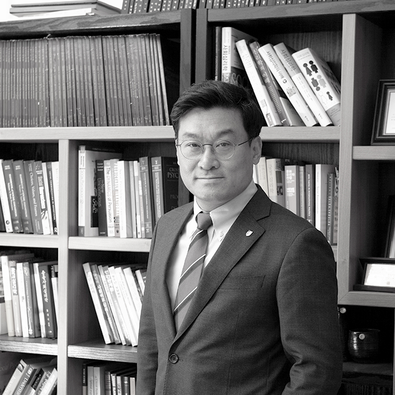
허태균
교수
학력: Ph.D. in Psychology, Northwestern University (1999)
연구 주제: 사회적 판단과 착각, 반사실적 사고, 문화와 사고과정, 법적 판단, 여가심리학
연구실: 법학관 구관 316호
이메일: tkhur@korea.ac.kr
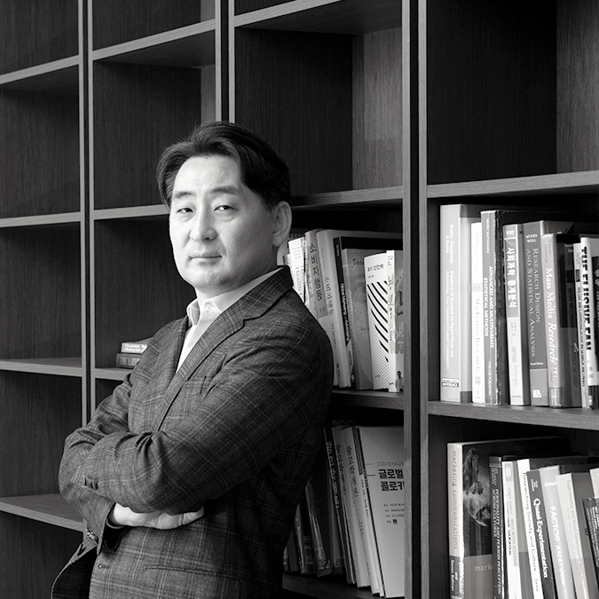
박선웅
교수
학력: Ph.D. in Psychology, Northeastern University (2013)
연구 주제: 개인 정체성, 인간 동기, 물질주의, 나르시시즘, 행위자성과 공동체성, 자기(self)
연구실: 라이시움 310호
이메일: sunwpark@korea.ac.kr
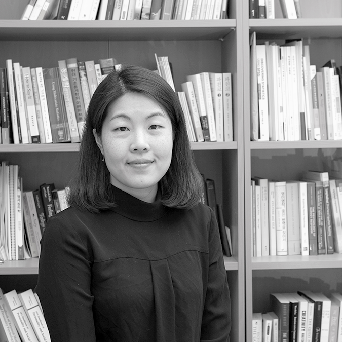
최은수
교수
학력: Ph.D. in Psychology, Georgetown University (2014)
연구 주제: 문화, 정서, 행복, 이타심
연구실: 법학관 구관 113A호
이메일: taysoo@korea.ac.kr
대학원생
박사과정
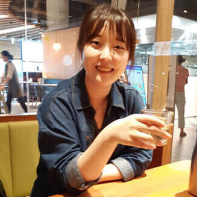
정승혜 (Seunghye Jeong)
박사과정
학력: 한양대학교 관광학 학사
연구 주제: 여가심리, intellectual humility
이메일: jeg2301@gmail.com
“여가와 관련된 현상들을 심리학적으로 이해하는 것에 관심이 있음.”
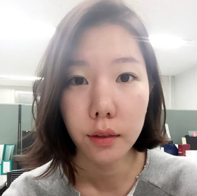
윤지연 (Jiyeon Yoon)
박사과정
학력: 고려대학교 사범대학 학사, 고려대학교 문화 및 사회심리학 석사
연구 주제: 여가심리, 문화정책, 행복
이메일: hahahoho810@gmail.com
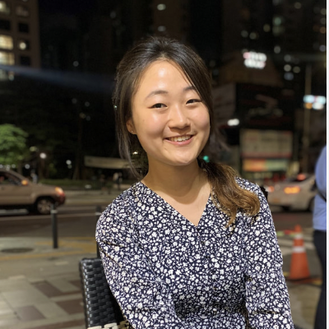
이태현 (Taehyun Lee)
박사과정
학력: 이화여자대학교 철학·국제학 학사, 서강대학교 경제학 석사
연구 주제: 비인지적 특성(Big 5, 자기효능감, 자존감)이 사회경제학적 결과에 미치는 영향
이메일: taehyunallison.lee@gmail.com
“사회 경제학적 결과물의 인과관계를 분석하기 위해 심리학을 공부한다. 이를 위해 믿음, 태도, 성격 등을 주요 변인으로 고려하는 연구를 하고자 한다. 건강 상태, 직업 혹은 교육의 정도를 선택할 때, 개인의 삶의 태도, 성격, 특징들이 영향을 어떠한 과정으로 주는지 알고 싶다. 또한, 개인의 주관적 만족도를 결정하는 것이 무엇인지도 궁금하며, 어떻게 하면 은퇴 후 삶을 잘 살아갈 수 있는지 또한 알아내고 싶다.”
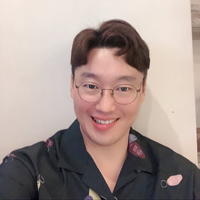
이준배 (Joonbae Lee)
박사과정
학력: 인천가톨릭대학교 신학 학사·석사, Providence College 교육학(상담 전공) 석사
연구 주제: 서사 정체성, 발달과 성격, 정신건강
이메일: jay2abra@gmail.com
“훌륭한 삶이란 사랑으로 힘을 얻고 지식으로 길잡이를 삼는 삶이다. (The Good Life is one inspired by love and guided by knowledge) - 버트런드 러셀”
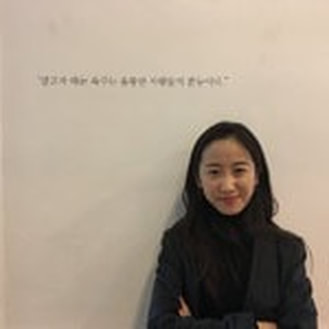
이승민 (Seungmin Lee)
박사과정
연구 주제: 서사 정체성, Authentic Leadership, 조직 정체성
이메일: b.creative.sammie@gmail.com
“내가 참으로 한 사람을 사랑한다면, 나는 모든 사람을 사랑하고, 세계를 사랑하고, 삶을 사랑하게 된다 - 에리히 프롬”
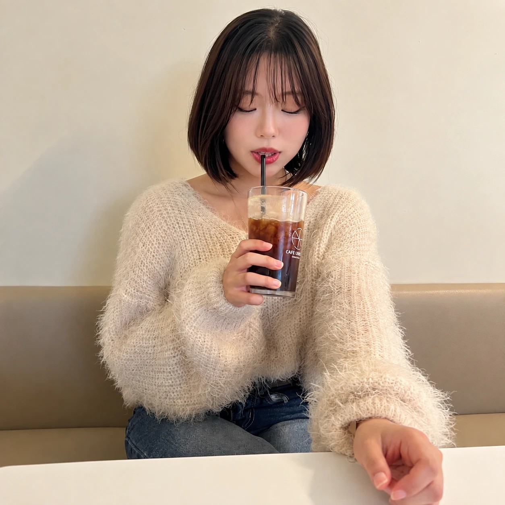
최지수 (Ji Su Choi)
석박사통합과정 · Lab Manager
학력: 고려대학교 심리학 학사
연구 주제: 자기 정체성, 진정성, 자기 통제
이메일: jisu030118@gmail.com
“나 자신을 바로 알되, 자존을 지키는 데 집착하지 말 것”
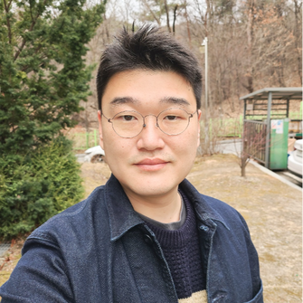
장상원 (Sangwon Jang)
박사과정
학력: 장로회신학대학교 신학과 학사, 동 대학원 교역학 석사, 고려대학교 문화 및 사회심리학 석사
연구 주제: 서사 정체성
이메일: sangjang@korea.ac.kr
“나와 다른 거의 모든 것들에 관심이 있다. 특히, 그 사람만이 가지고 있는 인생 이야기가 궁금하다.”
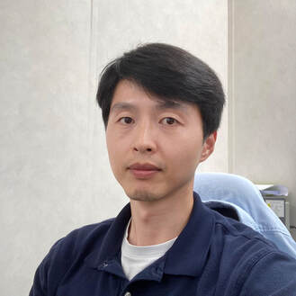
오영록 (Yeongrok Oh)
박사과정
학력: 충북대학교 심리학 학사·석사
연구 주제: 공격성, 범죄동기, 자백, 속임수 탐지
이메일: pelics0165@hanmail.net
“달리기가 끝나고 누워서 바라보는 하늘이 좋습니다.”
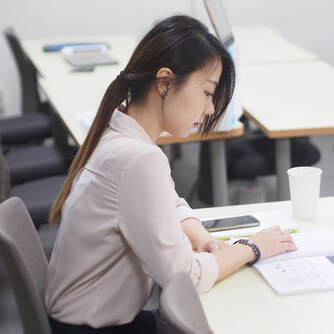
김혜진 (Hey Jin Kim)
박사과정
학력: State University of New York Binghamton 심리학 학사, 고려대학교 문화 및 사회심리학 석사
연구 주제: 범죄심리학, 수사심리학, 법심리학
이메일: h01j22@daum.net
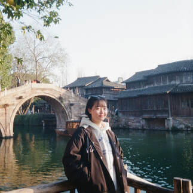
강주영 (Kang Ju Young)
석박사통합과정
학력: 한양대학교 사회학 학사
연구 주제: prosocial behavior, parenting style
이메일: glorykang0103@gmail.com
“Live peacefully & joyfully”
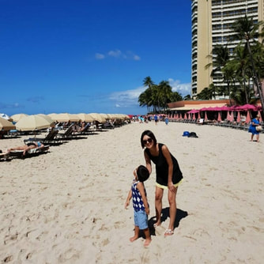
조용주 (Yongju Cho)
석박사통합과정
학력: 연세대학교 경영학 학사
연구 주제: 동기 부여, 서사 정체성
이메일: yongju128@hotmail.com
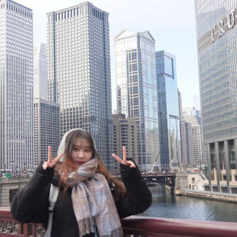
박혜민 (Hyemin Park)
석박사통합과정
학력: 성신여자대학교 심리학·법학 학사
연구 주제: 사법 판단, 범죄 심리, 미디어
이메일: 17hyemin@naver.com
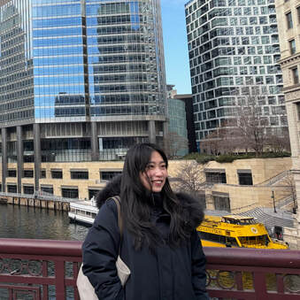
유천기 (Liu Tianqi)
석박사통합과정
학력: Dalian University of Foreign Languages 한국어학 학사, 서울대학교 국어학 석사
연구 주제: 정서, 문화, 다문화
이메일: cheongiyoo@gmail.com
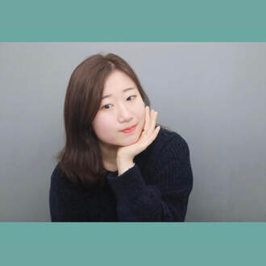
정에스텔라 (Estela Jung)
석박사통합과정
학력: 고려대학교 심리학 학사
연구 주제: 결혼, 사랑, 자기효능감
이메일: estelajung0517@gmail.com
“한국의 저출산과 비혼주의에 가장 관심 있습니다. 한국인들의 심리를 분석하여 저출산과 비혼주의를 해결하기 위한 방향을 제시하는데 돕고 싶습니다.”
석사과정
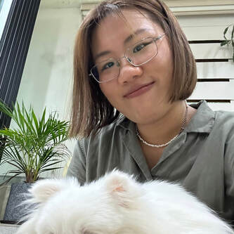
손위정 (Sun Weiting)
석사과정
학력: University of British Columbia 심리학 학사(가족학 부전공)
연구 주제: 다문화, 동아시아인, 소수자의 삶의 행복과 의미
이메일: weiting.sun.jn@outlook.com
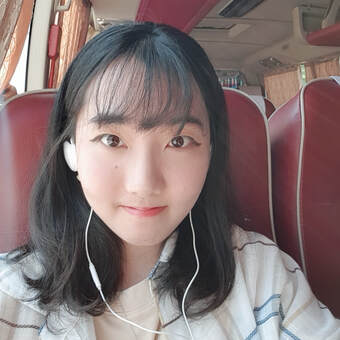
김하루 (Haru Kim)
석사과정
학력: 중앙대학교 심리학·통계학 학사
연구 주제: 디지털 게임 몰입, 디지털 자아, 한국인의 심리
이메일: kimharu7@korea.ac.kr
“正射必中; 올바르게 쏜 화살은 반드시 적중한다.”
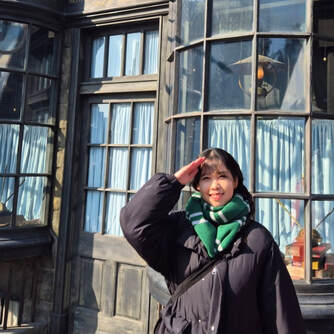
조서연 (Seoyeon Cho)
석사과정
학력: 고려대학교 심리학 학사
연구 주제: 사회문제, 범죄심리, 이타심, 낙인
이메일: seoyeonjo919@gmail.com
“어떻게 인간이 이럴 수 있을까라는 물음을 갖게 하는 것들에 흥미를 느낍니다. 극단적인 선과 악에 끌리면서 그 사이의 균형을 탐구하고자 합니다.”
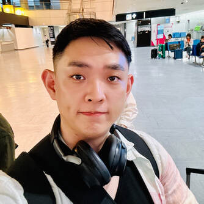
최명호 (Myeongho Choi)
석사과정
학력: 장로회신학대학교 신학과 학사, 동 대학원 교역학 석사
연구 주제: Narrative identity, Calling, Resilience
이메일: Mh.Choi326@gmail.com
“나는 나의 갈 길을 간다(눅13:33). 함께 더불어 행복한 세상을 꿈꿉니다!”
최윤경 (Yoonkyung Choi)
석사과정
학력: 숙명여자대학교 관현악 학사
연구 주제: 정체성, 동기, 전장심리
이메일: cykyung0708@naver.com
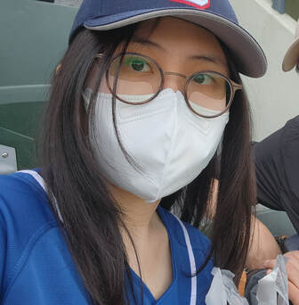
조아영 (Ah-young Jo)
석사과정
학력: 고려대학교 심리학 학사
연구 주제: TCK, 서사정체성, 양육 태도
이메일: ahyoungjo917@gmail.com
“과거의 선택을 후회하지 않고, 지금 마음에 충실하게.”
권유나 (Yuna Kwon)
석사과정
학력: 고려대학교 한문학·심리학 학사
연구 주제: 서사정체성, 웰빙, SNS와 인간
이메일: ilydv17@naver.com
“인간은 본질적으로 모두 동일하다 VS 사람은 개별적인 존재로 획일화할 수 없다 - 이 두 가지 주장 중 무엇이 진실인지, 혹은 둘 다 진실일지, 그에 대한 답을 심리학을 연구하며 확인해보고 싶습니다.”
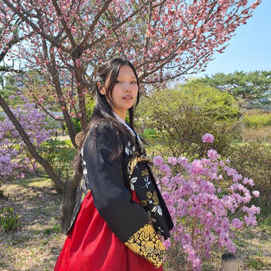
정혜주 (Hyeju Jung)
석사과정
학력: 고려대학교 심리학 학사
연구 주제: 서사정체성, 중독, 사랑, 외로움
이메일: hyejujun9@gmail.com
“내가 이해하는 모든 것은 내가 사랑하기 때문에 이해한다. 더 많은 것들을 사랑하고, 베풀 수 있는 삶을 살고 싶습니다.”
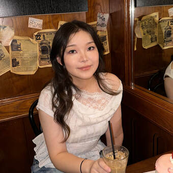
란나 (Rannati Haning)
석사과정
학력: Southwest Jiaotong University 응용심리학 학사
연구 주제: 정체성, 자기, 성장동기 및 정신건강
이메일: ranot22@naver.com
“모든 경험은 결국 나를 더 단단하게 만든다.”
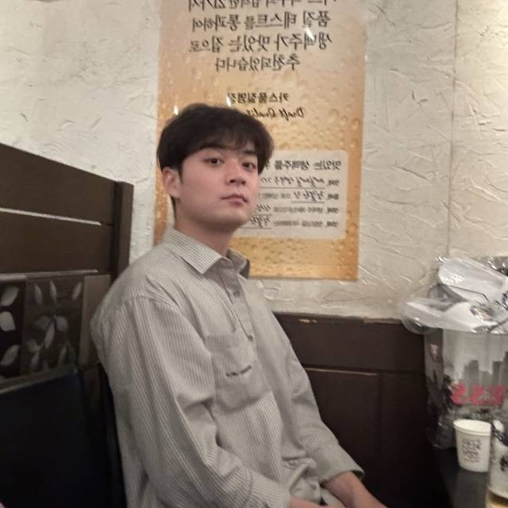
배현 (Hyeon Bae)
석사과정
학력: 고려대학교 심리학 학사
연구 주제: 사회인지, 시간 판단, 편향, 죽음
이메일: idh1590@korea.ac.kr
“제가 가장 못하는 것을 연구하고자 합니다.”
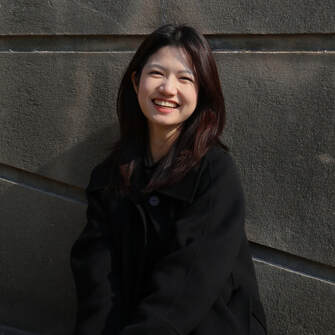
김연우 (Yeonwoo Kim)
석사과정
학력: 고려대학교 통계학·공공거버넌스 학사
연구 주제: 개인 정체성, 정체성 발달
이메일: ywkhana@naver.com
“Livin' my life like it's golden”
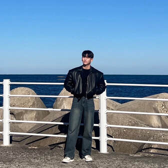
이승재 (Seungjae Lee)
석사과정
학력: 우석대학교 상담심리학 학사
연구 주제: 정체성, 자율성, 도덕적 실천, 삶의 의미
이메일: zx0222@naver.com
“충분한 숙고 없는 선행은 무책임한 유희에 불과하다.”
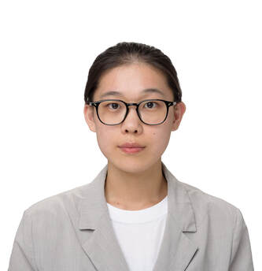
김서진 (Seojin Kim)
석사과정
학력: 고려대학교 심리학 학사
연구 주제: 정체성 발달, 소수자, 상호교차성
이메일: 0220tjwls@hanmail.net
“어제보다 나은 내일을 바랍니다.”
졸업생
박사 학위 취득 37명
고제원, 김가람, 김동직, 김세헌, 김수지, 김수진, 김은지, 김윤주, 김재신, 김정운, 남궁재은, 남순현, 박세환, 배기동, 배준성, 서신화, 송경재, 송혜정, 심경섭, 심영섭, 심진섭, 윤덕환, 윤상연, 이누미야 요시유키, 이주성, 이흥표, 장훈, 조병철, 조선영, 조안(Joane), 차상희, 채정민, 최승혁, 최일호, 최호영, 팔로마(Paloma), 한민
석사 학위 취득 111명
강호걸, 권오빈, 권지혜, 김경희, 김묘성, 김민종, 김세헌, 김소의, 김수연, 김연석, 김용훈, 김용희, 김우정, 김윤영, 김은결, 김일도, 김정명, 김제인, 김지원, 김지혜, 김지훈, 김진국, 김태익, 김태희, 김택수, 김현정, 김혜민, 김혜진, 김희철, 남승철, 류리나, 류인경, 류효린, 문승범, 문현, 박성미, 박수연, 박연주, 박유빈, 박율우, 박종도, 박지훈, 박희정, 배기동, 서동효, 서에스더, 성소현, 소옥, 송혜정, 신지영, 신희성, 심무식, 양석주, 오주영, 오준석, 오지향, 우상욱, 우소연, 유연옥, 유지현, 유현주, 유희성, 윤가영, 이다예, 이동하, 이수현, 이상민, 이애리, 이은정, 이은혜, 이준복, 이지나, 이진안, 이채린, 이호정, 임예지, 임준규, 장소연, 장상원, 장웨이, 장한영, 전경희, 전혜경, 정고운, 정세원, 정승기, 조민수, 조은서, 조자의, 조재현, 조하정, 주민주, 지넷(Jeanette Ong), 차현진, 채선애, 최소은, 최수원, 최은수, 최진이, 최효은, 카챠, 한그림, 한정윤, 한평민, 허용회, 허유진, 홍문기, 황재원, 황태호, 황현정, 홍세은